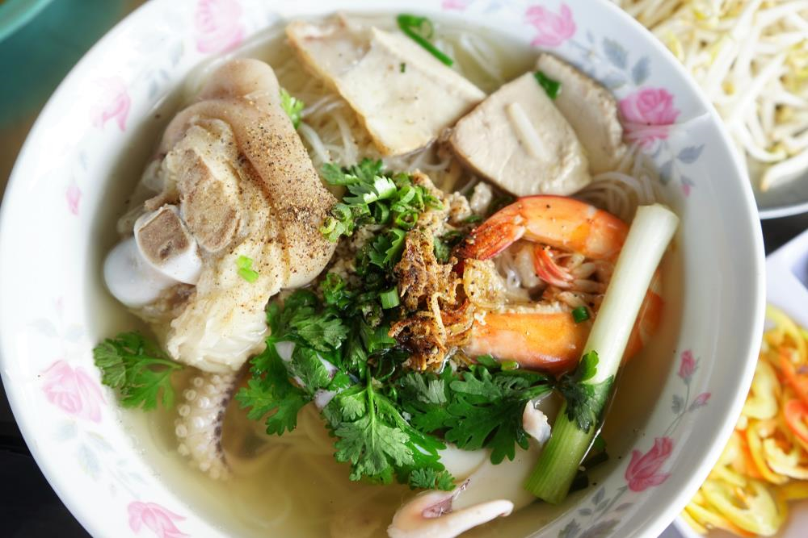
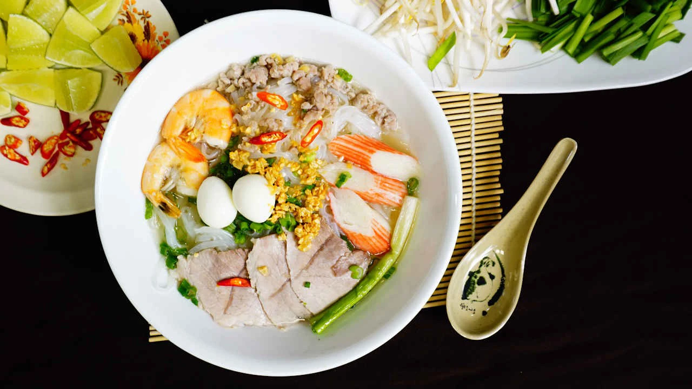
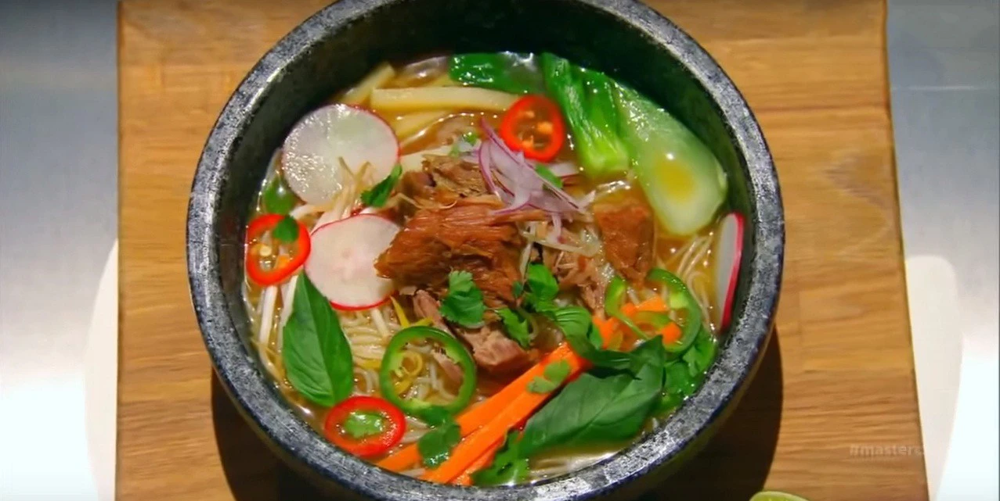

3/2/2024 15:27 GMT+7
Hủ tíu (hủ tiếu) là món ăn phổ biến hầu khắp các tỉnh thành phía Nam từ xưa đến nay. Hủ tíu và hủ tíu mì là món ngon có gốc từ văn hóa ẩm thực Trung Hoa. Ở miền Nam nói chung và ở Sài gòn- Chợ Lớn nói riêng, hủ tíu Tàu là món đặc trưng nhờ các hiệu mì gia nổi tiếng truyền qua nhiều đời. Hầu hết người Việt đều từng ăn qua hủ tíu, nhưng nhiều người trẻ Sài Gòn ngày nay ít ai để ý đến các chủng loại hủ tíu cũng như phân biệt đâu là cọng hủ tíu của người Hoa, đâu là hủ tíu của người Việt, và cả chuyện hủ tíu của người Việt miền nào, tỉnh nào. Cọng hủ tíu vốn được làm bằng bột gạo và hẳn nhiên nguyên bản của nó là do người Hoa di dân và lưu vong du nhập vào xứ Ta. Cọng hủ tíu nguyên bản của người Hoa tồn tại đến ngày nay là cọng hủ tíu mềm. Ngày trước, khi bạn vô một tiệm hủ tíu Tàu bạn sẽ được các chú phổ ky mời bạn ăn hủ tíu mềm.
Hủ tíu miền Tây ngược dòng lịch sử
Người Việt gốc hoa dù là người Quảng, người Tiều hay người Hẹ... dù họ ăn hủ tíu khô hay nước họ không ăn hủ tíu gì khác ngoài hủ tíu mềm, món hủ tíu xào cũng là xào cọng hủ tíu mềm, thậm chí nếu họ ngán hủ tíu mềm thì họ chuyển qua bún gạo. Cọng hủ tíu mềm của người Hoa gần giống như cọng bánh phở nhưng mềm, trong, bở và to hơn cọng bánh phở. Nhiều người cho rằng hủ tíu mềm của người Hoa và bánh phở là “anh em sinh đôi” dù mỗi cọng bánh có tên riêng nhưng giống nhau đến khó phân biệt. Ngày nay, các xe bán hủ tíu gõ của người nhập cư từ miền Trung có ở khắp phố - hẻm Sài Gòn. Bạn kêu một tô hủ tíu tức là bạn được bưng ra hủ tíu dai, hầu như không có xe hủ tíu gõ nào bán hủ tíu mềm. Dù ai cũng biết món khoái khẩu nhất của người miền Trung là món mì Quảng cũng có cọng bánh bột gọi là mì nhưng thật ra cũng na ná như cọng hủ tíu mềm.
Khẩu vị chọn ăn hủ tíu dai này thật đặc biệt và có lẽ chính vì cái khẩu vị “độc lập” này mà các hiệu hủ tíu Mỹ Tho, Đồng Tháp, Sa Đéc, Gò Công... ra đời và vang danh.. Cọng hủ tíu dai bình thường được làm từ bột gạo, tùy loại gạo ngon hay dở mà định chất lượng, giá cả cọng hủ tíu; nhưng đặc biệt cọng hủ tíu Mỹ Tho, Gò Công, Đồng Tháp... được làm từ bột gạo lọc, nên cọng dai hủ tíu đúng là một sáng tạo thú vị của người xưa.
Hủ tíu miền Tây ngược dòng lịch sử
Tất nhiên cách nấu nước lèo, gia vị nêm nếm, phụ phẩm ăn kèm... của các hiệu hủ tíu Việt so với hủ tíu Tàu khác biệt hẳn hoi; và chính các cọng hủ tíu dai mang tên các địa phương miền Nam đã tạo ra khác biệt để giúp đa dạng khẩu vị món ngon Việt.
Cọng hủ tíu dai từ xưa cho đến nay không chỉ là nguyên liệu chính cho các tiệm hủ tíu từ bình dân cho đến sang trọng, mà chính những đầu bếp gia đình người miền Nam mỗi khi có đám tiệc thường nấu món hủ tíu dai xào lòng heo, lòng gia cầm, hải sản hay xào chay... Nếu ai là người miền Nam hay đi ăn đám ở xứ Nam Kỳ Lục tỉnh thì sẽ biết món ngon này chưa bao giờ bị chê, bị ế.
Khi khách hàng cần chúng tôi sẽ có mặt
Hỗ trợ thanh toán online qua Ví điện tử
Thông tin chính xác, kịp thời, đầy đủ
GIỚI THIỆU
QUẢNG CÁO
CHÍNH SÁCH BẢO MẬT
LIÊN HỆ
©2024